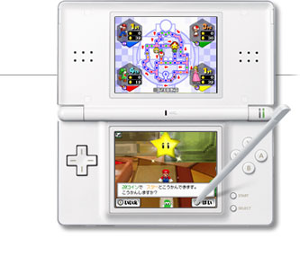
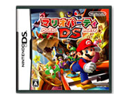
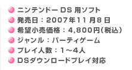
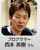
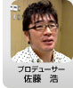

|  | ||
|  |  |
|


| 最後にユーザーの方々へひとことずつお願いします。 |
| 西本： | まずは１人で遊んで、 |
| 柴田： | 次に２人で遊んで、 |
| 中田： | 慣れたら４人でワイワイ遊んでくれたら作り手としては嬉しいです。 |
| 菊池： | 面白いミニゲームがてんこ盛りなので、ぜひそれを楽しんでください。 |
| 山根： | テレビから離れていつでもどこでも遊べるようになったので、気軽に対戦して友達の輪を広げてもらえたらいいですね。 |
| 廣瀬： | パズルモードも充実してかなりのボリュームがあるので、時間をかけて遊び尽くしてくださいね。 |
| 生田： | やりごたえのあるミニゲームもたくさん入っているので末永く楽しんでください。 |
| 佐藤： | いままで「マリオパーティ」をリリースしてきたNINTENDO64やゲームキューブは、ニンテンドーＤＳほど数が普及していませんでした。今回はすごく多くの人に「マリオパーティ」の面白さを届けるチャンスだと思っています。もちろん「ニンテンドーＤＳだからこれぐらいしかできないですよ」という言い訳なんてしません。一番新しい「マリオパーティ」と思って遊んでもらいたいですね。これで10年ぐらい「マリオパーティ」は作りませんので（冗談です）長く遊んでもらえればと思います。 |
| 今日はありがとうございました！ |
|
||||||||||||||||||||||||||||||||||||||